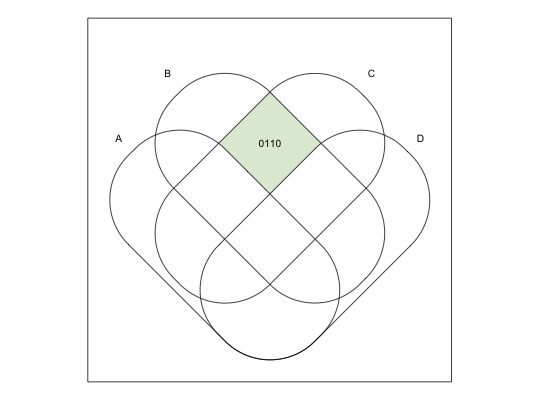
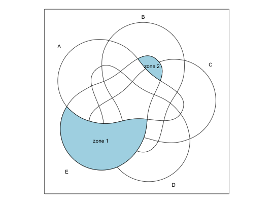

getCentroid(data)
This function takes a list of dataframes or a matrices containing x and y values, which define zones (polygons), and calculates their centroids.
Most of the coordinates for the intersection labels in this package were calculated using the formula for a centroid of a non-self-intersecting closed polygon, approximated by 10 vertices.
A list with x and y coordinates, for each zone in the input list.
Centroid. (n.d.). In Wikipedia. Retrieved January 06, 2016, from https://en.wikipedia.org/wiki/Centroid
venn("0110")# centroid for the intersection "0110" in a 4 set diagram # "0110" is 0*2^3 + 1*2^2 + 1*2^1 + 0*2^0 = 6 centroid <- getCentroid(getZones(6, 4))[[1]] text(centroid[1], centroid[2], labels = "0110", cex = 0.85)
# centroids for the two zones in the "E not A" zones venn("0---1")zones <- getZones(seq(1, 15, by = 2), 5) polygon(zones[[1]], col="lightblue")polygon(zones[[2]], col="lightblue")text(do.call("rbind", getCentroid(zones)), labels = c("zone 1", "zone 2"), cex = 0.85)